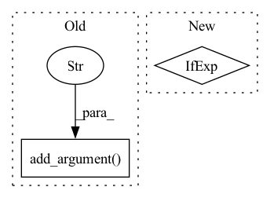

Pattern ID :38467

Before Change
"--suffix", type=str, default=None, help="Suffix of the restored faces"
)
parser.add_argument("--only_center_face", action="store_true")
parser.add_argument("--aligned", action="store_true")
parser.add_argument("--paste_back", action="store_false")
parser.add_argument("--save_root", type=str, default="results")
self.args = parser.parse_args(
After Change
// background enhancer with RealESRGAN
model = SRVGGNetCompact(num_in_ch=3, num_out_ch=3, num_feat=64, num_conv=32, upscale=4, act_type="prelu")
model_path = "realesr-general-x4v3.pth"
half = True if torch.cuda.is_available() else False
upsampler = RealESRGANer(scale=4, model_path=model_path, model=model, tile=0, tile_pad=10, pre_pad=0, half=half)
// Use GFPGAN for face enhancement
In pattern: SUPERPATTERN
Frequency: 3
Non-data size: 2
Instances
Fragment ID: 109925469
Project Name: tencentarc/gfpgan
Commit Name: 3e27784b1b4eb008d06c04dbbaf6bdde34c4da84
Time: 2022-08-31
Author: wxt1994@126.com
File Name: predict.py
M Class Name: Predictor
N Class Name: Predictor
M Method Name: setup(1)
N Method Name: setup(1)
M Parent Class: BasePredictor
N Parent Class: cog.Predictor
M File Name: predict.py
N File Name: predict.py
M Start Line: 23
M End Line: 77
N Start Line: 27
N End Line: 45
'>
Before Change
default=3,
help="Anchor num scales, `scales = [2 ** (ii / num_scales) * anchor_scale for ii in range(num_scales)]`. Force 1 if use_anchor_free_mode",
)
anchor_group.add_argument(
"--anchor_aspect_ratios",
type=float,
nargs="+",
default=[1, 2, 0.5],
help="Anchor aspect ratios, `num_anchors = len(anchor_aspect_ratios) * anchor_num_scales`. Force [1] if use_anchor_free_mode",
)
anchor_group.add_argument("--anchor_pyramid_levels_min", type=int, default=3, help="Anchor pyramid levels min.")
anchor_group.add_argument("--anchor_pyramid_levels_max", type=int, default=-1, help="Anchor pyramid levels max. -1 for calculated from model output shape")
Loss arguments
After Change
elif basic_save_name is None:
data_name = args.data_name.replace("/", "_")
model_name = args.det_header.split(".")[-1] + ("" if args.backbone is None else ("_" + args.backbone.split(".")[-1]))
anchor_mode = "anchor_free" if args.use_anchor_free_mode else ("yolor_anchor" if args.use_yolor_anchors_mode else "effdet_anchor")
basic_save_name = "{}_{}_{}_{}_batchsize_{}".format(model_name, args.input_shape, args.optimizer, data_name, args.batch_size)
basic_save_name += "_randaug_{}_mosaic_{}_RRC_{}".format(args.magnitude, args.mosaic_mix_prob, args.random_crop_mode)
basic_save_name += "_lr512_{}_wd_{}_{}".format(args.lr_base_512, args.weight_decay, anchor_mode)
'>
Fragment ID: 109925461
Project Name: leondgarse/keras_cv_attention_models
Commit Name: df3cf1ce0ac4b02a9c73496b1a583b9a892c7b0a
Time: 2022-03-25
Author: leondgarse@gmail.com
File Name: coco_train_script.py
M Class Name: AnonimousClass
N Class Name: AnonimousClass
M Method Name: parse_arguments(1)
N Method Name: parse_arguments(1)
M Parent Class:
N Parent Class:
M File Name: coco_train_script.py
N File Name: coco_train_script.py
M Start Line: 56
M End Line: 130
N Start Line: 58
N End Line: 159
'>
Before Change
anchor_group = parser.add_argument_group("COCO arguments")
anchor_group.add_argument("--use_anchor_free_mode", action="store_true", help="[COCO] Use anchor free mode")
anchor_group.add_argument("--anchor_pyramid_levels_min", type=int, default=3, help="[COCO] Anchor pyramid levels min")
anchor_group.add_argument(
"--anchor_pyramid_levels_max", type=int, default=-1, help="[COCO] Anchor pyramid levels max. `-1` means yolox: 5, efficientdet: 7"
)
anchor_group.add_argument(
"--anchor_scale", type=int, default=4, help="Anchor scale, base anchor for a single grid point will multiply with it. Force 1 if use_anchor_free_mode"
)
After Change
args = parser.parse_known_args(argv)[0]
args.additional_anchor_kwargs = json.loads(args.additional_anchor_kwargs) if args.additional_anchor_kwargs else {}
if args.use_anchor_free_mode:
args.anchor_scale = 1
return args
'>
Fragment ID: 109925456
Project Name: leondgarse/keras_cv_attention_models
Commit Name: 395e20dae33afc89bda7ea68badf798e3168aeb9
Time: 2022-03-24
Author: leondgarse@gmail.com
File Name: eval_script.py
M Class Name: AnonimousClass
N Class Name: AnonimousClass
M Method Name: parse_arguments(1)
N Method Name: parse_arguments(1)
M Parent Class:
N Parent Class:
M File Name: eval_script.py
N File Name: eval_script.py
M Start Line: 33
M End Line: 51
N Start Line: 39
N End Line: 48